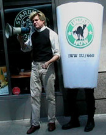

Submitted on Sat, 11/25/2006 - 3:58am

November 22, 2006
Five unjustly fired IWW baristas entered the Starbucks regional headquarters today to demand their jobs back and demand that Starbucks cease its scorched earth union-busting policy. As SWU members and community supporters picketed outside, the fired baristas delegation addressed their demands to Starbucks "Partner and Asset Protection Investigator" Marc Stella inside the company's posh office across from the Empire State Building. Marc Stella is the company's internal Pinkerton who conducted the sham investigation against Daniel Gross and is likely complicit in all the baristas' terminations. Regional Director Jim McDermott was conveniently out of the office enjoying the Thanksgiving Weekend and his fat cat salary as baristas work extra-hard meeting holiday demand on a poverty wage.
Submitted on Wed, 11/15/2006 - 4:35am
Disclaimer - The following article is reposted here because it is an issue with some relevance to the IWW. The views of the author do not necessarily agree with those of the IWW and vice versa.
By Daniel Goldin - Huffington Post, November 14, 2006.
 A few days after putting up my post "Starbucks and the White Whale" -- a reflection on Starbucks' ambition to become a cultural taste-maker -- I received an email from Daniel Gross, a Starbucks union-organizer in New York, pointing out some facts I had got wrong. I had said that "most of Starbucks' employees work part-time." In fact, all of Starbucks' retail employees work part-time (the company includes management in its statistics), with no guarantee even of the twenty hours needed to stay on the company's part-time worker health plan.
A few days after putting up my post "Starbucks and the White Whale" -- a reflection on Starbucks' ambition to become a cultural taste-maker -- I received an email from Daniel Gross, a Starbucks union-organizer in New York, pointing out some facts I had got wrong. I had said that "most of Starbucks' employees work part-time." In fact, all of Starbucks' retail employees work part-time (the company includes management in its statistics), with no guarantee even of the twenty hours needed to stay on the company's part-time worker health plan.
Submitted on Thu, 11/02/2006 - 3:12am
 Sister Worker Isis Saenz was fired today by Starbucks for participating in a protest Thursday evening against the company's union-busting [http://starbucksunion.org/node/1094].
Sister Worker Isis Saenz was fired today by Starbucks for participating in a protest Thursday evening against the company's union-busting [http://starbucksunion.org/node/1094].
The company claims that Isis acted inappropriately towards Regional Director Jim McDermott at the protest. Isis's principled stand for the right to join a union free of coercion apparently didn't comport with Starbucks' "guiding principles"
As in the case of Daniel Gross, Starbucks has fired an IWW barista for engaging in a union protest. Clearly, Starbucks is attacking the heart of the SWU's Direct Action strategy.
Submitted on Fri, 10/27/2006 - 9:32pm
New York, NY- Holding picket signs and handing out Howard Schultz “Most Wanted” flyers, union baristas and supporters protested the visit of the Starbucks Chairman to promote the coffee chain's first bookselling venture. Two campaign supporters entered the Park Avenue store where one of 25 promotional events around the country took place and unfurled a "Stop Union-Busting" banner. The two campaigners were forcibly removed by a Starbucks Regional Director. The baristas crashed the event to demand an end to the relentless anti-union campaign overseen by Starbucks Chairman Howard Schultz who opted not to attend.
“Four IWW members are currently out of a job because of Howard Schultz’s animosity towards unions,” said Isis Saenz, a New York barista and IWW member. “Schultz is a billionaire and just made the list of the world’s richest people. What more does he want?”
While Starbucks is set to profit handsomely from its expansion into bookselling, baristas continue to languish in poverty with fluctuating work hours each week. Starbucks has fallen far short of the socially responsible image it seeks to create. Despite referring to itself as a leader in employee health care, the coffee giant insures a lower percentage of its workforce than Wal-Mart.
Starbucks has waged a fierce anti-union campaign against baristas joining the Industrial Workers of the World to gain an independent voice at work. The company agreed to refrain from spying, bribing, threatening, and terminating workers in a March settlement with the U.S. government triggered by charges from the IWW Starbucks Workers Union [www.StarbucksUnion.org]. However, Starbucks has continued union-busting with impunity including terminating workers for exercising their right to join the union.
Despite the unlawful anti-union campaign, baristas have won wage increases, more secure scheduling, and safety improvements through direct action on the job and in the community. The union currently has an organized presence at seven Starbucks locations in New York City and Chicago.
Submitted on Fri, 10/27/2006 - 9:08pm
Oxfam revealed today that Starbucks has been working to block Ethiopian coffee farmers from asserting the right to their own cultural heritage. Ethiopia is seeking to control its own coffee names- Sidamo, Harar, and Yirgacheffe- against Starbucks' opposition. The company's maneuvering is depriving Ethiopian coffee farmers of tens of millions of dollars a year in much needed revenue.
The revelation is further evidence that Starbucks' socially-responsible claims regarding coffee farmers and baristas is nothing but spin.
Visit the Starbucks campaign homepage at Oxfam's website: here
Take a stand with workers across the Starbucks supply chain with the Justice from Bean to Cup!